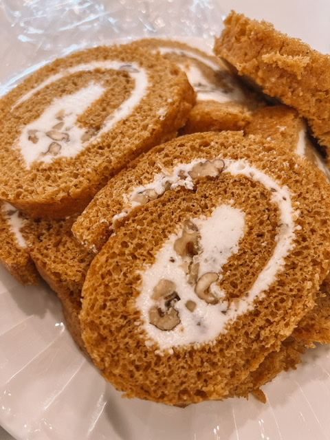

World's Best Pumpkin Roll!

Why Pumpkin Roll?
A moist, spiced pumpkin sheet cake is spread with a vanilla cream cheese filling, then rolled up and dusted with powdered sugar for an after-dinner treat that's both elegant and delicious.
Ingredients:
Pumpkin Cake
- 1 cup white sugar
- ⅔ cup pumpkin puree
- 3 large eggs, beaten
- ½ teaspoon ground cinnamon
- ¾ cup all-purpose flour
- 1 teaspoon baking soda
Cream Cheese Filling
- 8 ounces cream cheese, softened
- 1 cup powdered sugar, or more to taste
- 2 tablespoons butter, softened
- ¼ teaspoon vanilla extract
Cooking steps:
- Preheat the oven to 375 degrees F (190 degrees C). Grease a 10x15-inch jelly roll pan.
- Make cake: Blend together sugar, pumpkin puree, eggs, and cinnamon in a mixing bowl.
- Mix flour and baking soda together in a separate bowl. Add flour mixture to pumpkin mixture and blend until smooth. Evenly spread in the prepared pan.
- Bake in the preheated oven until cake springs back when lightly touched, 15 to 25 minutes. Remove from the oven and cool for 5 minutes.
- Invert cake onto a cotton (not terry cloth) tea towel. Starting with a short edge, roll up cake in the towel jelly-roll style; place seam-side down to cool, about 15 minutes.
- While the cake is cooling, make filling: Beat cream cheese, powdered sugar, butter, and vanilla in a mixing bowl until smooth.
- When cake has completely cooled, unroll and remove towel. Spread filling over cake, all the way to the edges. Roll cake up again without the towel. Wrap with plastic wrap and refrigerate until ready to serve.
- To serve, sift powdered sugar over the roll and slice into 10 portions.